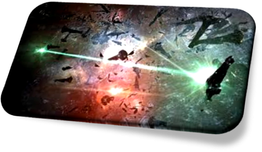
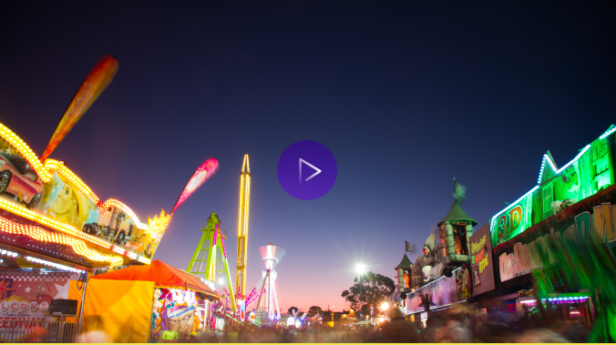

Bloodbath of B-R5RB
EVE online
The Bloodbath of B-R5RB was massive-scale virtual battle fought in the MMORPG space game Eve Online and was documented as the largest player versus player battle in history at the time. Over 7,548 player characters overall and a maximum of 2,670 players in the B-R5RB system at one time. The in-game cost of the losses totalled over 11 trillion InterStellar Kredit (ISK), which equated to approximately $330,000 USD.
EVE Online is a futuristic, space-based, massively-multiplyer role-playing game, set within an expanding sandbox universe. Players of Eve Online are able participate in a number of in-game professions and activities, including mining, piracy, manufacturing, trading, exploration and combat (Both PvP & PvP).
Player in-game resources to the value of $300,000 completely dissipated in 21 hours.
splatoon
Splatoon is a 3rd person online, team-based shooter where players use ink guns and special ink based abilities to as weapons. Players can customize their character with headgear, clothes, and shoes from shops, with more items becoming available as the player's level increases. Each item carries an ability that improves the player's statistics, such as faster respawn time or longer special duration.
Splatoon
In-game apparel transitioning into real life clothing merchandise. Credible clothingbrand. Where the virtual world meets real life
How it looks
How it looks
(29.4 Billion) spent by women Every Year on clothing in the UK alone Amiibo Toys-to-Life sales - including Splatoon figurines, hit 10.3 million
figures sold (and 5.8 million Amiibo cards) within 1 fiscal year, by April 2018
Girl Play Games!
Girls are playing video games more than ever before. The divide between male & female gamers is shrinking. In fact, in the mobile gaming space, studies show that women surpass men in numbers. And as the merging of video games and mobile games evolves, that calls for some very interesting reflection on the gaming industry as a whole
Apex Legends
Apex Legends gained 2 million players in 24hrs & amassed 50 million within its first month. $92 million was earned through microtransactions, in this Free-to-play console game.
Diversity isn�t a deal-breaker. 8 Characters, with half(4) being female and 7 being within the pool of racial minorities (by western standard) or racially ambiguous - and the consumers are perfectly fine with that. 1 character listed as gay in sexual orientation and another non-binary.
“…Through the years, it was video games that saved me. After a hard day of dysphoria, it was so relieving to just be able to melt into a virtual world and play my true self.
This is why representation in video gaming is so important, not just trans people, but for anybody It’s important for people to be able to see themselves in the media they consume, They deserve to feel like an unattainable badass and deserve to see themselves interacting with a virtual world in powerful and moving ways…”
Mary Sue
Players Online
Players don't just play. Vast online communities also come together to collaborate and co-create. Competitive players have the skills and knowledge to bend and redefine the rules of a videogame. Fan artists are building and expanding the fictional worlds they love. Countless other players are performing dazzling feats of engineering and construction to turn existing games into entirely new ones. This creative and rebellious work is being shared with millions online across video streaming platforms, forums & social media.
Players Offline
Players are again meeting OFFLINE! Gaming arenas such as GAME Belong, allow gamers to
occupy the same physical space and play games shoulder to shoulder. Players are also
still arranging popular events, such as gaming tournaments within the same occupied
spaces, for games such as Street Fighter and DBZ.
Not only do gamers still enjoy and crave close proximity interaction with their gaming
peers, such interactions are critical for mental and physical health.
Line Wobbler
Games like this are enabling both gamers and non-gamers to further explore the boundaries of what gaming is and allow them to come together in arcade settings that enhanced pubs and clubs
It requires a little imagination, but this single line of flashing lights represents a one-dimensional series of dungeons. Different colour combinations of lights indicate your locations as you travel up and down the strip, and the enemies and obstacles you must avoid. The controller was inspired by a viral YouTube video of a cat flicking a metal spring doortop with its paw, to wake its owner. Players must wobble the large, custom-made spring to move their character through the series of illuminated dungeon levels…
Disruptors
'Videogames are for kids.' 'Videogames are for boys.' 'Videogames are violent.' These are just some of the stereotypes which colour how we think about and interact with videogames. But disruption has begun. A wave of cultural voices, spanning writers, designers, players and commentators, is challenging how we talk about videogames, questioning and pushing back against some of the stereotypes. Through games, YouTube videos and writings, these disruptors are confronting controversial subjects head-on and exploring the mediumss power to impact our thought systems and politics. Ultimately our society. The disruptive voices bring sensitivity and nuance to complex issues. But although critically praised, many face strong and at times negative reactions. Some find their work banned from leading platforms, while others are subjected to campaigns of online harassment. Yet, their efforts have had huge impact and continue to broaden and deepen vital conversations.
قلب
قلب is a programming language exploring the role of human culture in coding. Code is written entirely in Arabic, highlighting cultural biases of قلب computer science and challenging the assumptions we make about programming. It is implemented as a tree-walking language interpreter in JavaScrip (Qalb/Qlb).
Saudi Arabia’s love for Online gaming continues to grow and developers bloom. “A problem is, authenticity is only on one side”
�The fact that we speak English is also an enormous privilege and it�s a huge privilege when it comes to making, playing and simply TALKING about games. And the fact that English is necessary to do a lot of these things, limits the perspectives that are included� � Meg Jayanth
We suck at inclusivity. $100 million, that was the budget for Battlefield 3. A game where you shoot Arabs in hyper-realistic fashion, but they didn't even bother to get the language right.
“…I, being a Pakistani, was so excited at seeing a Karachi map and then immediately so disappointed when I played the map. The map had Arabic written all over, even though that isn’t the country’s language…”
Pakistani Kotaku Reader on Modern Warfare 2